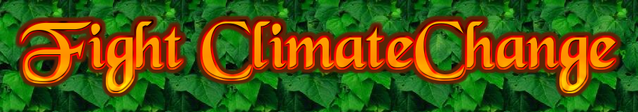

Research and Education
Conduction of different orientation programs and training on the local level in communities and schools.
Research on different affected areas with the help of professionals, interns, and volunteers.
Community Participation
Formation of youth clubs in schools and communities.
Training
Training like solid waste management, Farming techniques.
Aids and donation
We are donating different physical, financial and educational resources to victims of different districts as
needed.
Policy Advocation
Fight for different policies against climate change and for aids in both local and national level